<mat-sidenav-container class="example-container">
  <mat-sidenav mode="side" class="menu" opened>
    
    <mat-list class="list" role="list">
      <mat-list-item role="listitem" routerLink="home"><span class="labelmenu">Home</span></mat-list-item>
      <mat-list-item role="listitem" (click)="goToExternalLink('https://www.metrofood.it/')"><span class="labelmenu">About Us</span></mat-list-item>
      <!--<mat-list-item role="listitem" routerLink="access"><span class="labelmenu">Access</span></mat-list-item>-->
      <mat-list-item role="listitem" routerLink="training"><span class="labelmenu">Training</span></mat-list-item>
      <mat-list-item role="listitem" routerLink="living-labs"><span class="labelmenu">Living Labs</span></mat-list-item>
      <!--<mat-list-item role="listitem" routerLink="open-calls"><span class="labelmenu">Open Calls</span></mat-list-item>-->
      <mat-list-item role="listitem" routerLink="science"><span class="labelmenu">Research</span></mat-list-item>
      <mat-list-item role="listitem" routerLink="contacts"><span class="labelmenu">Contacts</span></mat-list-item>
    </mat-list>
       <!--
      -->
      <!--<span class="toolbar-icons"></span>
      <button mat-icon-button aria-label="Example icon-button with heart icon">
        <mat-icon>account_circle</mat-icon>
      </button>-->
      <mat-list class="listlanguage" role="list">
        <mat-icon routerLink="login">account_circle</mat-icon>
        <mat-list-item role="listitem" routerLink="home"><span class="labelmenu">ITA</span></mat-list-item>
      <mat-list-item role="listitem" routerLink="it/home"><span class="labelmenu">ENG</span></mat-list-item>
      </mat-list>

  </mat-sidenav>
  <mat-sidenav-content>
    <mat-toolbar>
      <div class="column-logos">
        
      </div>
      <div class="column-logos">
        
      </div>
      <div class="column-logos">
        
      </div>
      <!--<span class="toolbar-icons"></span>
      <button mat-icon-button aria-label="Example icon-button with heart icon">
        <mat-icon>account_circle</mat-icon>
      </button>-->
    </mat-toolbar>
    <router-outlet class="content"></router-outlet>
  </mat-sidenav-content>
</mat-sidenav-container>
